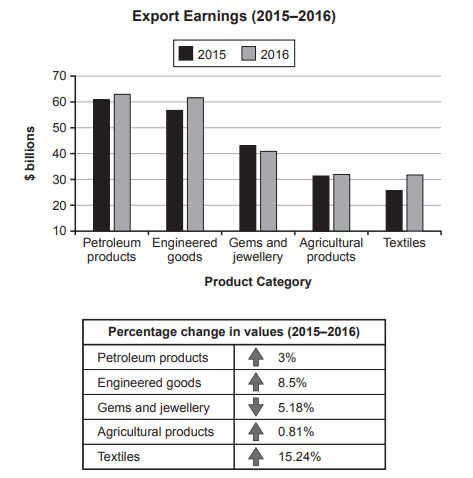

Task 1 — Export earnings 2015–2016 (bar + table)
The chart below shows the value of one country's exports in various categories during 2015 and 2016. The table shows the percentage change in each category of exports in 2016 compared with 2015. Summarise the information by selecting and reporting the main features, and make comparisons where relevant.

The bar chart and table below show the value, in billions of dollars, of one country's exports in five product categories in 2015 and 2016, together with the percentage change between the two years.
Overall, petroleum products generated the highest export earnings in both years, while textiles experienced by far the largest growth. Apart from gems and jewellery, every category rose over the period.
According to the bar chart, petroleum products led with about $60 billion in 2015, edging up to roughly $62 billion in 2016. Engineered goods were the second-largest category, climbing from around $56 billion to $61 billion. Gems and jewellery followed at approximately $43 billion and $41 billion, while agricultural products stayed close to $30 billion in both years. Textiles, the smallest category in 2015 at about $25 billion, caught up with agricultural products at around $32 billion in 2016.
The table provides the exact percentage changes. Textiles rose most sharply at 15.24%, followed by engineered goods at 8.5%. Petroleum products grew by just 3%, agricultural products by 0.81%, and gems and jewellery fell by 5.18%.
TA / TR：覆盖混合图两类组件：条形图（5 个品类 2015/2016 绝对值）与表格（5 项百分比变化）；关键数字（60/62、56/61、43/41、约 30、25→32；15.24 / 8.5 / 3 / 0.81 / -5.18）均来自图表，无杜撰；最高品类（Petroleum）、最大涨幅（Textiles 15.24%）、唯一下降品类（Gems -5.18%）、Textiles 在 2016 反超 Agricultural 的对比均点到。
CC / LR / GRA：四段式（Introduction → Overview → Body 1 条形图 → Body 2 表格），衔接以 Overall / According to / The table provides 推进；条形图绝对值用 roughly / approximately / about 模糊表达（避免假精确），表格百分比原样引用；句式简单句与复合句交替，长句控制在 25 词左右，标点无漏。
export earnings / export value— 出口收入product category— 产品类别petroleum products— 石油产品engineered goods— 工程产品gems and jewellery— 宝石与珠宝percentage change— 百分比变化stayed close to— 保持在…附近caught up with— 追赶上roughly / approximately / about— 大约most sharply / by far— 最为陡峭 / 远远